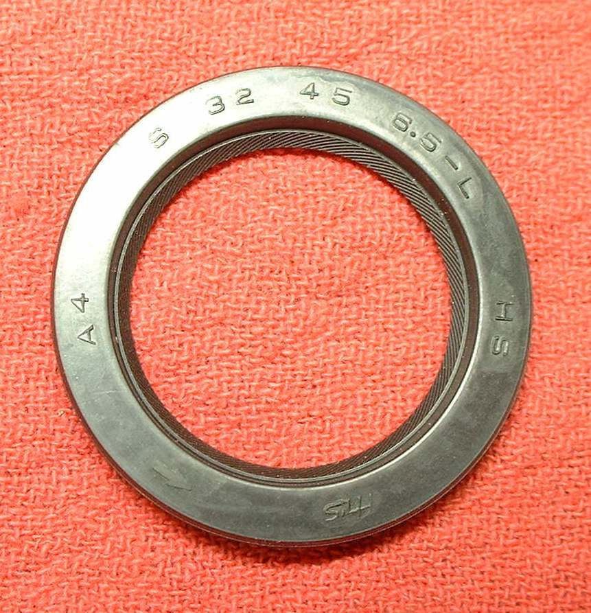
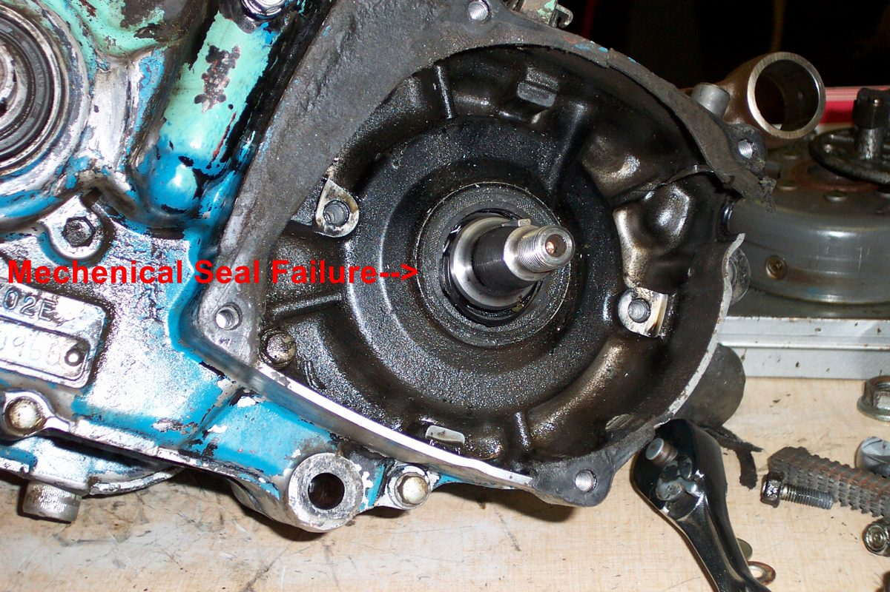
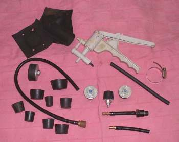
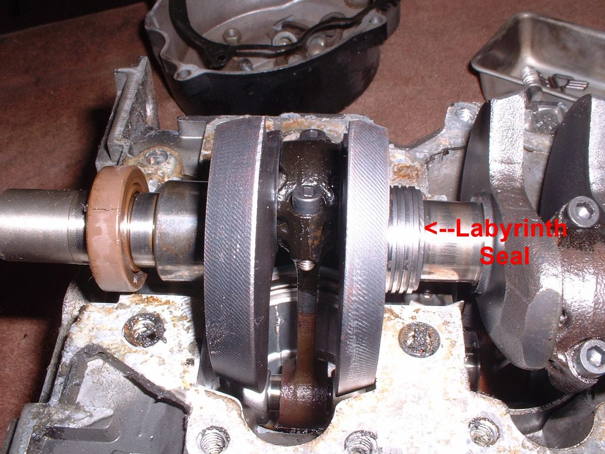
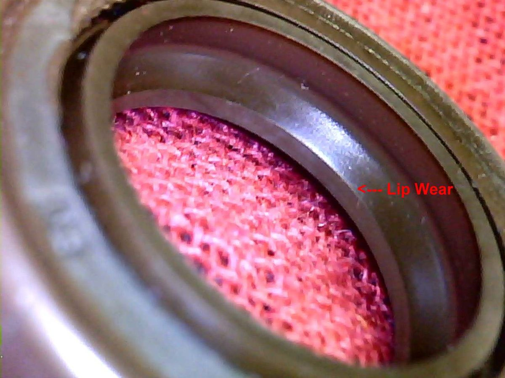

A two-stroke needs a sealed crankcase to pull in mixture and push it up to the cylinder. If a crankshaft seal or a case joint leaks, air is drawn in and the mixture goes weak, or gearbox oil gets in. The signs are hard starting, a poor idle, a weak and hot engine, or heavy smoke.
Is it safe to ride?
Ride with care and only short distances. A lean engine can overheat and seize the piston quickly. Stop if the engine loses power and gets hot.
Quick checks first
- Does it start easily when warm but not after standing overnight? Old seals can harden when cold and seal again when warm.
- Is there heavy smoke with a gearbox oil smell, and does the gearbox oil level rise?
- Are the carburettor mounting and inlet rubbers tight and undamaged?
- Is the spark plug light grey or white, a sign of lean running?
Diagnose it step by step
1Is the carburettor or inlet joint sealed?
- Check for cracks and loose clamps. Find an intake air leak.
- Sound: go to step 2.
2Is the compression normal?
- No: the fault is in the piston, rings or cylinder. Test engine compression.
- Yes: go to step 3.
3Is there oil on the outside of the case near the crankshaft ends?
- Yes: a seal may be weeping. Fit new seals: Remove and fit an engine oil seal.
- No: go to step 4.
4Does a pressure and vacuum test hold?
- No: find the leak with soapy water and cure it. Pressure and vacuum test a two-stroke crankcase.
- Yes: the crankcase is sealed. Look at the fuel and ignition instead: Hard to start when the engine is cold.
If the engine overheats or smells of burnt oil, stop and let it cool. A seized piston is the usual result.
Causes, most likely first
| Cause | How to confirm | Fix |
|---|---|---|
| Inlet or carburettor joint leak | Air leak found around the inlet | Find an intake air leak |
| Worn generator-side crankshaft seal | Pressure test drops; engine runs weak and lean | Fit new seals |
| Worn clutch-side seal | Gearbox oil in the engine; smoke | Fit new seals |
| Case joint or base gasket leak | Soap bubbles at the joint | Gasket or sealant as the manual calls for |
| Cracked case | Visible crack or hole | Replace the case |